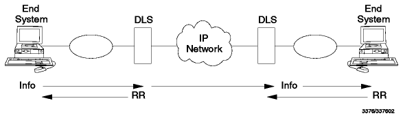

Table of Contents
Table of Contents  Routing
Daemons
Routing
DaemonsTable of Contents Routing
Daemons
Initially, the ARPANET (see ARPANET) played a central role in the development of the Internet, particularly in the area of routing. Although it was replaced in its role as the backbone of the Internet by the NSFNET in the late 1980s, the experience gained from its routing architecture had a direct effect on the later development of the current set of routing protocols.
At its heart was the concept of an Autonomous System (AS): a
collection of networks controlled by a single authority. Each AS is registered
with the NIC (now the InterNIC) and has a 16-bit identification number called
the autonomous system number or AS number. These are listed in
RFC 1166 - Internet Numbers. The ARPANET core system was itself
considered an autonomous system.

Figure: The ARPANET Backbone - The terms in the diagram are
explained in the text which follows.
In keeping with the nomenclature used at the time, we shall refer to the routers between Autonomous Systems as gateways. All routing between gateways can be categorized as intra-AS (also termed Interior) if the gateways belong to the same AS or inter-AS (also termed Exterior) if they belong to different ones.
Intra-AS routing uses an Interior Gateway Protocol (IGP) and inter-AS routing uses an Exterior Gateway Protocol (EGP). The ARPANET architecture did not specify which protocol should be used as an IGP, but it did specify a protocol to be used as an EGP. Confusingly, this protocol was also named Exterior Gateway Protocol.
Note: To avoid confusion, we shall use the term ``EGP'' to refer specifically to the EGP protocol, and ``an EGP'' to refer to a protocol belonging to the EGP group of protocols.
In the ARPANET system, the core gateways which made up the backbone were maintained by a central authority, the Internet Network Operations Center. They provided reliable and authoritative routes for all possible Internet networks, and connected the ARPANET to the other Internet networks.
The core gateways (shown as CGx, CGy and so on in Figure - The ARPANET Backbone) had to know about all possible destinations in order to optimize the ARPANET traffic. A datagram travelling from one local network to another via the core system passed through exactly two core gateways. The ARPANET routing architecture specified that the core gateways communicated with the Gateway-to-Gateway Protocol (GGP).
Non-core gateways (shown as G in Figure - The ARPANET Backbone) were maintained by the organizations responsible for the individual Autonomous Systems and forwarded information about networks in their areas to the core gateways using EGP.
In addition to the simple ICMP error-reporting messages, an ARPANET core gateway also implemented:
Local internetworks created by individual groups can span multiple physical networks, tied together through gateways (non-core gateways). Such a group of networks is called an autonomous system (AS). Among its responsibilities, an AS must:
An autonomous system must collect routing and reachability information about its own internal networks. Selected machines must forward that information to other autonomous systems and to the core gateways. As noted above, EGP must be used for this inter-AS communication. For inter-AS communication any suitable IGP may be used, the two most common being:
GGP is an historic protocol. Its status is not recommended. It is described in detail in RFC 823 - The DARPA Internet Gateway.
As mentioned previously (see Core and Non-Core Gateways), the original ARPANET core gateways used the Gateway-to-Gateway Protocol, to exchange routing information. In addition to this role, it had to route datagrams that were passing through the core system. Any datagram in transit through the core system should pass through two core gateways. The basic principles of GGP follow:
When a core gateway comes up, it is assigned core neighbors. A gateway only needs to propagate information about the networks it can reach to its neighbors. The neighbors will update their routing information with the received information and will send the changes to their assigned neighbors.
The information consists of sets (N,C) where:
GGP messages are carried in IP datagrams, and typically contain a list of (N,C) pairs. They are sent by a gateway to its neighbors whenever one of the following occurs:
Upon receipt of a GGP message from gateway G, the neighbor gateway A will compare an incoming (N,C) pair to the (N,C) pair in its local tables. If the cost to reach network N would be smaller by using the gateway G (originator of the GGP message) than when using the routing information in the local table, the routing path for network N is updated to point to gateway G, and as this is a route change, the gateway A will generate a GGP message to inform its neighbors of the change. Eventually, the information on network N will reach all the core gateways.
As described in NSFNET, the NSFNET backbone has been implemented in three phases and its routing architecture and protocols have evolved accordingly. This evolution and possible future alternatives are described in detail in:
The first backbone used the Hello protocol (see The Hello Protocol) for interior routing. The client networks were mostly using RIP (see Routing Information Protocol Version 1 (RIP, RIP-1)) as an IGP and they were connected to the backbone using a gated interface which acted as an interface between the Hello and RIP protocols.
The second backbone used a subset of the ANSI OSI Intermediate System to Intermediate System (IS-IS) routing protocol (see OSI Intermediate System to Intermediate System (IS-IS)) as an IGP. It used EGP (see Exterior Gateway Protocol (EGP)) to exchange reachability information between the backbone and the attached mid-level and peer networks. The routing is controlled by a distributed routing policy database that controls the acceptance and distribution of routing information. This database is managed by the Network Operations Center and is available through Information Services.
In the third backbone, EGP was progressively replaced by a true inter-AS routing protocol called the Border Gateway Protocol (BGP), described in Border Gateway Protocol (BGP). One important aspect of BGP is its treatment of the Internet as an arbitrarily connected set of autonomous systems with no single core system. This removes the requirement for a single network such as NSFNET to play a central role and allows the backbone to be composed of many peer networks.
 Interior
Routing Protocols
Interior
Routing Protocols